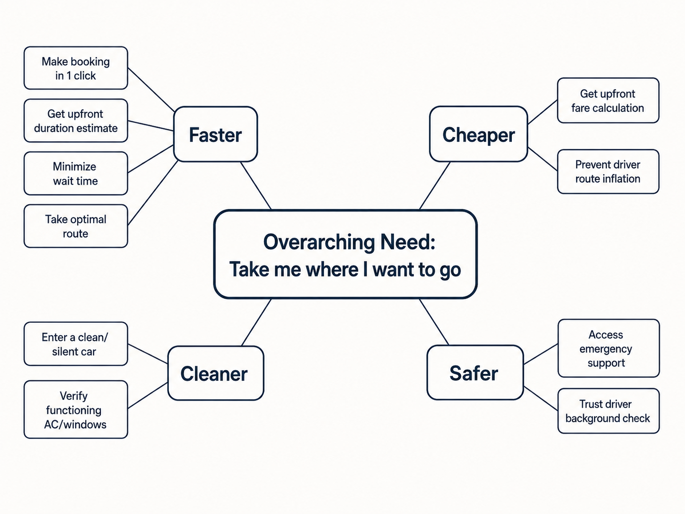
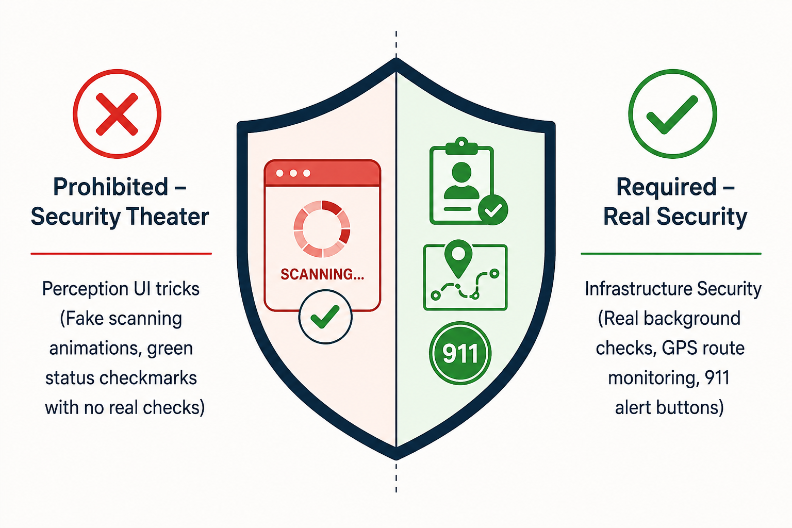
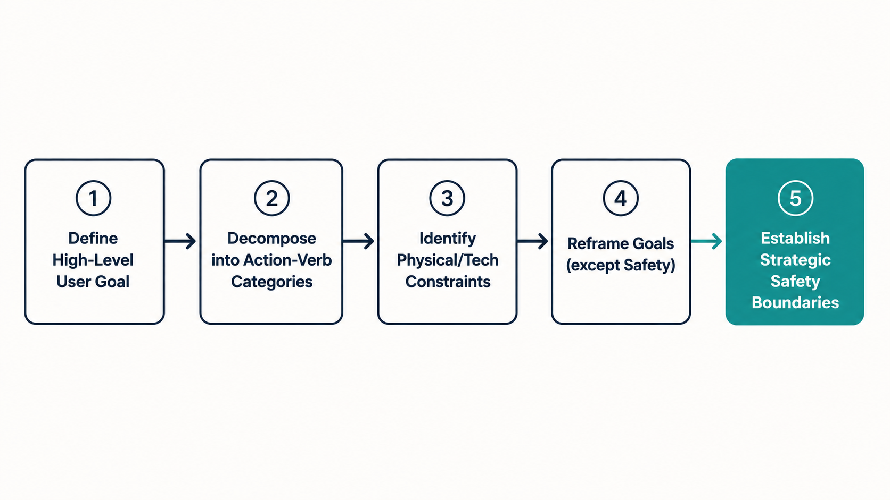

Your goal
Decompose high-level customer goals into actionable, action-verb sub-needs, apply goal reframing on operational/technical limits, and identify safety constraints where reframing is strictly prohibited.
Lecture overview
This lecture covers the fifth practical exercise of the course: drilling down into the problem space of your chosen study product. It teaches how to write user needs from the customer's perspective and reframe goals when technology hits a physical limit.
Central argument
A PM cannot define the problem space in isolation; it must be co-created with customers and cross-functional teams. To keep the problem space actionable, needs must be written using action verbs from the user's perspective rather than listing feature solutions. When physical or technological limits prevent further product optimization, a skilled PM must reframe the goal to satisfy the underlying human need (e.g., entertaining a passenger during a slow ride). However, safety represents a strict ethical boundary: PMs must never reframe safety or use "security theater" to create a false perception of trust.
1. The Collaborative and Hypothesis-Driven Problem Space
In professional product management, a PM never defines the problem space alone. Needs mapping requires co-creation with customers and cross-functional team members (designer, tech lead). It represents a hypothesis that must be validated through observations and user interviews during the discovery phase.
2. Structuring Action-Verb Needs
User needs must be written using action verbs from the customer's perspective. Focusing on active user behaviors (e.g., "get upfront estimated time") rather than software requirements (e.g., "Implement SQL route queries") keeps the backlog strictly in the problem space, preserving flexibility for development.
3. Case Study: Uber Cabs (2009) Needs Decomposition
Decomposing the high-level need "Take me where I want to go" reveals nested layers of needs under four key categories: Faster (Speed), Cheaper (Cost), Cleaner (Quality), and Safer (Trust).

23-needs-tree.png
Need decomposition tree. Root node is 'Take me where I want to go'. Branches out into Faster, Cheaper, Cleaner, and Safer, displaying actionable action-verb sub-needs for each.
4. The Concept of Goal Reframing
Goal Reframing is the process of redefining a customer's problem by examining their underlying psychological needs, letting you solve the pain through alternative pathways when direct execution is blocked by physical or technical limits.
For example, traffic limits how fast an Uber can travel. By asking why the user hates waiting, Uber reframes speed into engagement (e.g., in-car Wi-Fi, music) to make travel time productive and enjoyable.
5. The Ethical Safety Boundary
While reframing speed or cleanliness is a valid growth strategy, safety must never be reframed. PMs must avoid "security theater"—using visual status checkmarks or fake scans to create a false perception of safety without backing it with real security. Safety must be solved with real, verified infrastructures (background checks, emergency buttons).

23-safety-boundary.png
Split shield illustration. Left side (Prohibited) shows fake green checkmark UI theater crossed out. Right side (Required) shows infrastructure security background checks and emergency buttons.
Comparison: Strategic Action Matrix
| Need Category | Underlying Customer Pain | Technical / Operational Limit | Reframed Goal Strategy |
|---|---|---|---|
| Faster | Waiting in a car is boring and unproductive. | Limited by city traffic and physical vehicle speed. | Reframe: Make the travel time productive/entertaining (e.g., provide in-car Wi-Fi). |
| Cheaper | Fear of driver route manipulation and fare inflation. | Muted profit margins under commodity fare pricing. | Reframe: Compete on non-price factors (e.g., convenience, vehicle class) to avoid commoditization. |
| Cleaner | Entering dirty, uncooled, or damaged vehicles. | Impossible to inspect thousands of partner cars daily. | Reframe: Emphasize driver friendliness and hospitality to offset minor cleanliness issues. |
| Safer | Anxiety regarding driver trust and physical security. | Ethical Boundary: Zero shortcuts allowed. | No Reframing: Implement strict background checks and real emergency monitoring. |
Practical Product Management example
Situation
A PM at a grocery delivery app is reviewing customer complaints. The data shows that the primary user pain point is delivery speed during peak hours (e.g., Friday evenings), where deliveries take up to 90 minutes. The logistics team states that delivery times cannot be reduced further because of local traffic bottlenecks and a shortage of delivery drivers.
Decision
The PM holds a collaborative session with the lead developer and designer. They realize that the direct solution (hiring more drivers) has reached a financial limit. They decide to reframe the goal. Instead of focusing on physical transit speed, they examine the user's anxiety during the wait. They reframe the problem from "Get the food here faster" to "Make the waiting time predictable and stress-free."
Reasoning
The user's real frustration is not just the 90-minute wait; it is the uncertainty of when the food will arrive, which prevents them from planning their evening.
Consequence
The engineering team builds a real-time visual delivery tracker (similar to Uber's tracking map) showing the driver's vehicle progress, along with an interactive game/recipe selector in the app. While the physical delivery still takes 90 minutes, support tickets regarding late orders drop by 45%, and customer satisfaction scores for peak hours increase by 30%. The user's psychological need for control and predictability was successfully satisfied through reframing.
Transferable lesson
When physical or technical bottlenecks block direct optimization, reframe the goal to address the underlying psychological anxiety or user experience. Satisfying the user's need for transparency or engagement can resolve the pain point without changing the physical constraints.
Common misunderstandings
"Reframing a problem is a way to trick the user"
Correction: Reframing is not about deception. It is about understanding the root human need (e.g., reducing boredom or anxiety) and satisfying it through alternative features when physical limits are reached. Deceptive practices (like fake UI loading animations that hide service errors) damage trust and represent poor product management.
"The PM should write down the exact database schema in the needs document"
Correction: Needs must remain strictly in the problem space. Describing a need as "We need a MySQL table for driver ratings" is a solution-space error. Express the need from the user's perspective using action verbs ("As a rider, I want to rate my driver so that I can reward good service"), leaving the engineering team free to choose the best database structure.
"Safety features can be optimized or skipped if they have low usage metrics"
Correction: Safety is a non-negotiable ethical boundary. Even if an emergency button has 0.01% usage, it must not be removed or deprioritized. Product safety must be solved with real-world infrastructure, not metrics-driven cost cuts.
Key concepts and definitions
- Goal Reframing: Redefining a customer's problem by looking at their underlying psychological needs to solve it in a new way.
- Action-Verb Needs: Defining customer requirements using active, user-centric verbs (e.g., "track car") rather than passive features.
- Operational Limit: The boundary where a company cannot directly control or monitor physical services on a day-to-day basis.
- Security Theater: Implementing superficial UI indicators to create a perception of safety without backing it with real security.
Key takeaways
- Problem space definition is collaborative; co-create needs maps with cross-functional teams and customers to gather diverse viewpoints.
- State needs using action verbs from the customer's point of view to avoid premature solution-space commitments.
- Decompose broad goals ("Get a ride") into actionable sub-needs (Faster, Cheaper, Cleaner, Safer) using onion-peeling.
- Reframe the goal when physical traffic or technical bottlenecks prevent direct speed or cost optimization.
- Reframing speed to engagement (like providing Wi-Fi or tracking map entertainment) makes waiting times feel faster.
- Reframe cleanliness to hospitality (emphasizing driver friendliness) to mitigate minor car maintenance issues.
- Safety is an ethical boundary; it must never be reframed, and security theater must be avoided in favor of real security.
- Uber Cabs (2009) prioritized trust and security using background checks and monitoring rather than UI tricks.
Visual summary

23-visual-summary.png
Flowchart display: start at high-level goal, branch into action-verb categories, identify physical/operational constraints, route to reframing categories (Speed/Cost/Clean) or strict safety boundary check.
One-minute review
Use Active Verbs: Define your problem space using active, user-centric statements. Focus on what the user wants to do, not the software files you plan to build. Reframe on Limits: When physical or technological boundaries block speed or quality improvements, reframe the problem to solve the underlying psychological pain. Safety is Absolute: Never reframe safety. Implement verified, real-world security frameworks rather than visual UI shortcuts.
Interactive Practice
Decompose the Uber (2009) passenger needs. Toggle the tabs below to read the strategic split and sub-needs for each category of the problem space onion.
Faster: The Speed Category
Sub-Needs: Book in 1 click, get upfront estimated trip time, minimize wait time, navigate optimal routes, track car live.
Reframed Goal Strategy: Make travel time productive or entertaining (e.g., provide in-car Wi-Fi) when traffic jams block further speed optimization.
Cheaper: The Cost Category
Sub-Needs: Get upfront fare calculations, prevent driver route manipulation (no billing surprises).
Reframed Goal Strategy: Compete on non-price factors (convenience, safety trust, ride selection) to avoid commodity price battles.
Cleaner: The Quality Category
Sub-Needs: Enter clean/undamaged car, enjoy good smell, verify functioning AC/windows.
Reframed Goal Strategy: Focus on driver hospitality and friendliness to offset minor operational car cleanliness slips.
Safer: The Trust Category
Sub-Needs: Do not feel threatened, trust driver honesty, access emergency alerts, monitor vehicle real-time.
Reframed Goal Strategy: Prohibited. Safety is an absolute ethical boundary. Uber must implement real screening and tracking security.
Test your ability to apply goal reframing and safety boundaries. Choose the correct action for each scenario below.